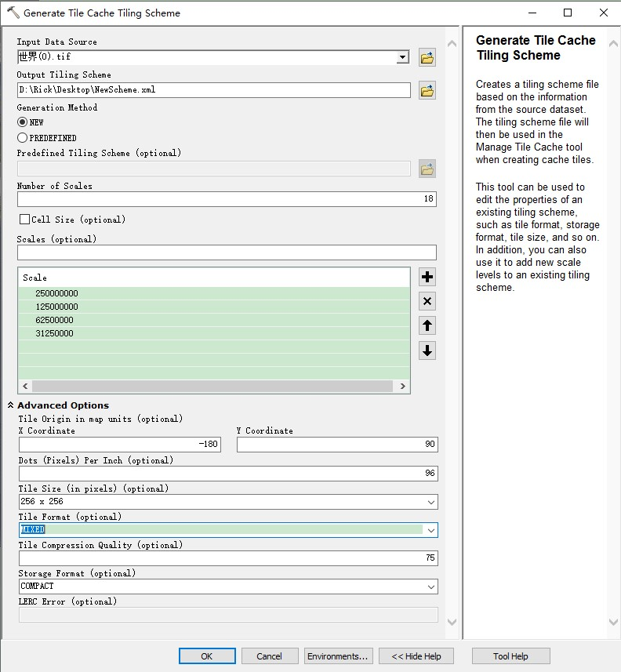

ArcGIS Desktop 10.6
一、生成切片方案
打开 ArcGIS Desktop，打开 工具箱( Tools Box ) –> 系统工具箱( System Tools Box ) –> 数据管理工具( Data Managment Tools ) –> 切片缓存( Tile Cache )–> 生成切片缓存切片方案( Generate Tile Cache Tiling Scheme )

重要参数：
- 切片格式(
Tile Format)：主要是PNGx、JPEG、MIXED，MIXED混合格式，指的是在切片的时候，如果检测到瓦片内有透明区域，则这个瓦片使用PNG32格式，如果没有，则使用JPEG格式。这样做可以在不失去透明通道的前提下，有效降低瓦片数据文件的大小。 - 切片压缩质量(
Tile Compression Quality)：仅对JPEG（包括MIXED中使用JPEG的瓦片）有效，参数值需要介于 1-100 之间，默认是 75。 - 存储格式(
Storage Format)：COMPACT紧凑格式，也就是把多个瓦片（最多128x128个）存储到一个bundle文件的形式，避免出现大量碎文件；EXPLODED分散格式，就是把每一个瓦片存储成一个图片文件，这个形式的瓦片不能和 tpk 包一起使用。
二、管理切片缓存
打开 ArcGIS Desktop，打开 工具箱( Tools Box ) –> 系统工具箱( System Tools Box ) –> 数据管理工具( Data Managment Tools ) –> 切片缓存( Tile Cache )–> 管理切片缓存( Manage Tile Cache )
COMPACT 存储格式：
EXPLODED 存储格式：
重要参数：
- 管理模式(
Manage Mode)：RECREATE_ALL_TILES： 替换所有瓦片，不管存不存在；RECREATE_EMPTY_TILES： 替换空瓦片，也就是如果存在则不替换；DELETE_TILES： 删除瓦片，这个选项用来删除所有的瓦片数据文件，但是不删除目录结构。（注意：如果输出是已经存在的瓦片目录，则该目录下的conf.cdi并不会更新，这在替换了数据源等情况下可能导致输出瓦片与描述信息不对应）
三、导出切片缓存
将 bundle 存储格式导出为图片格式
打开 ArcGIS Desktop，打开 工具箱( Tools Box ) –> 系统工具箱( System Tools Box ) –> 数据管理工具( Data Managment Tools ) –> 切片缓存( Tile Cache )–> 导出切片缓存( Export Tile Cache )

四、注意事项
-
管理切片缓存错误
删除 缓存位置(
Cache Location) 下生成的 缓存名称(Cache Name) 子文件夹，打开 【环境(Environments)】设置对话框，设置 Parallel Processing 参数为 0，然后重新生成
参考：